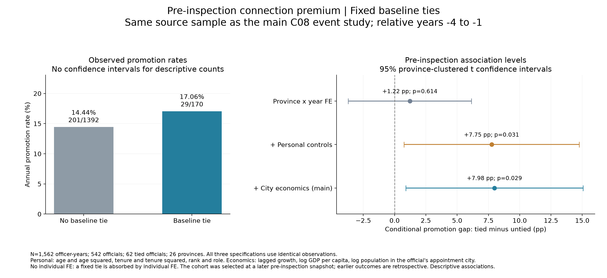
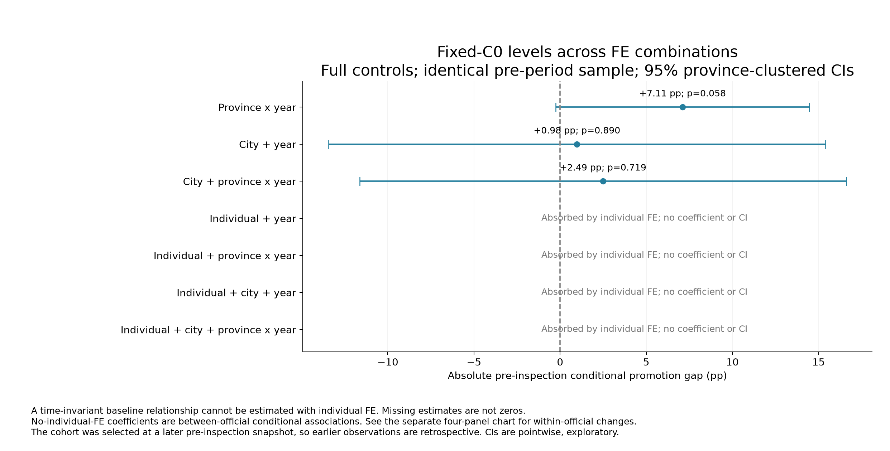
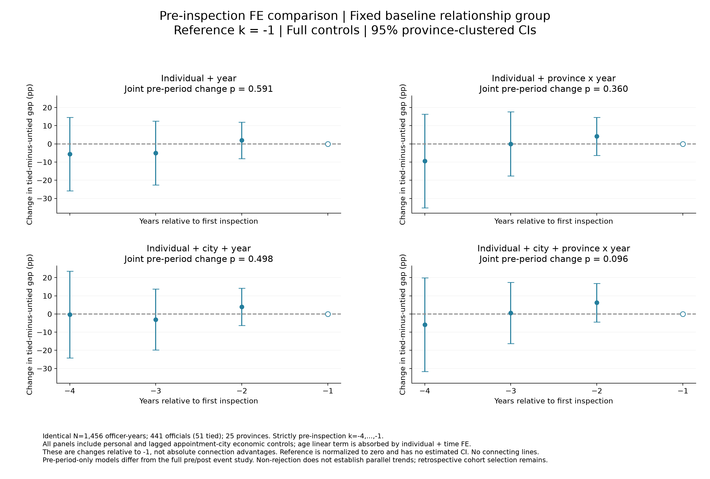
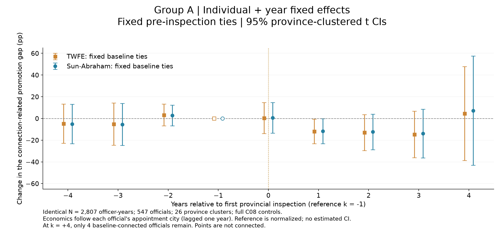
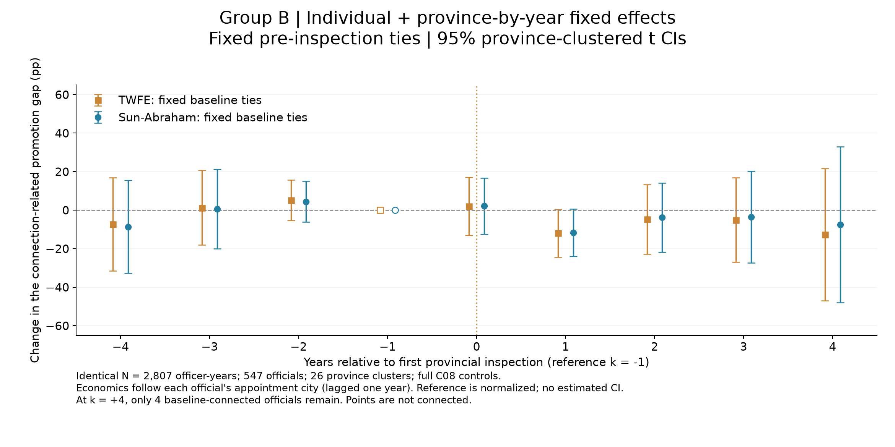
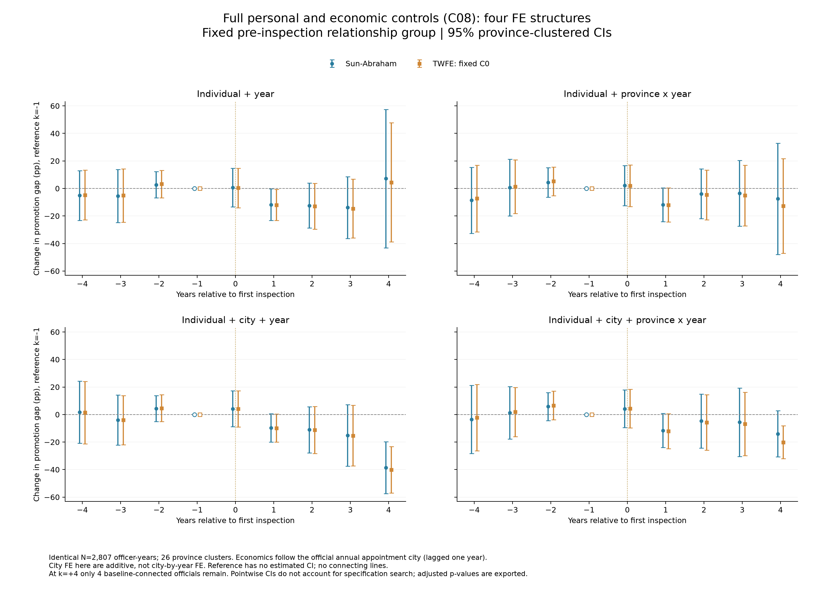
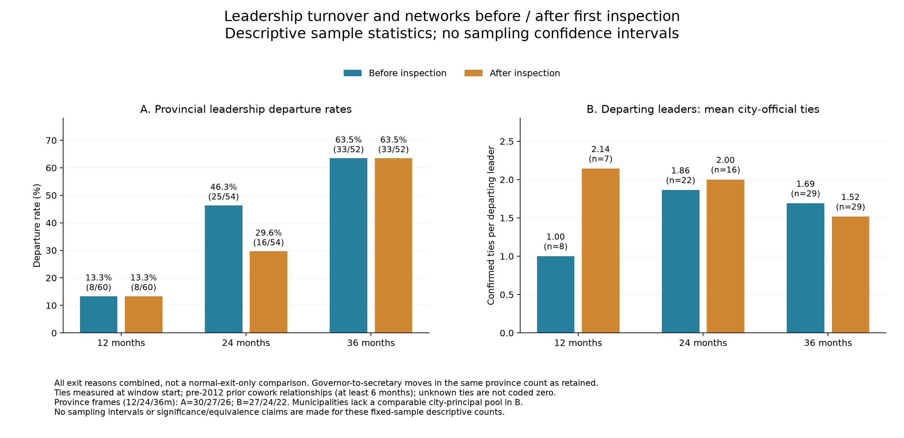
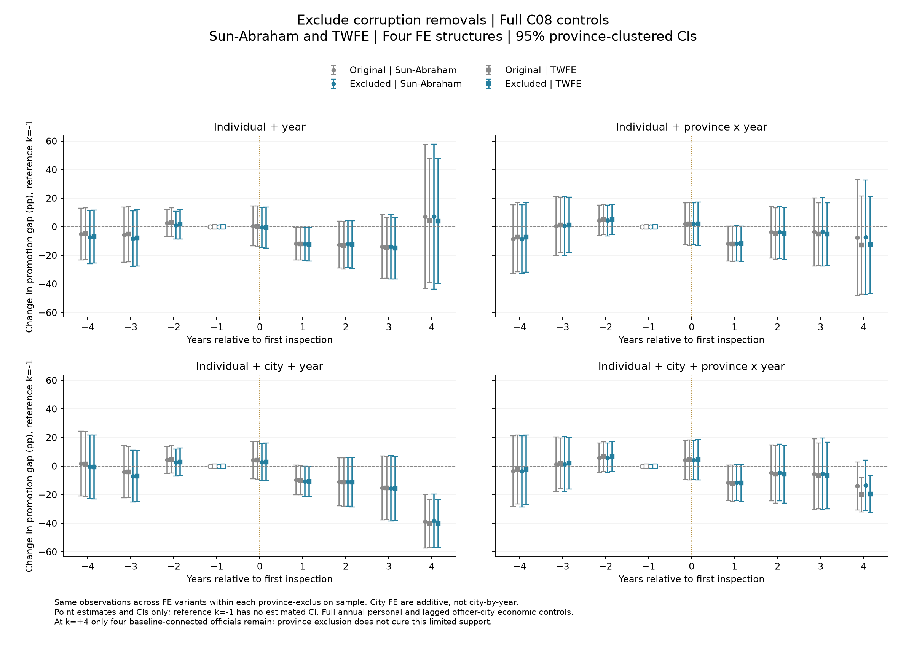
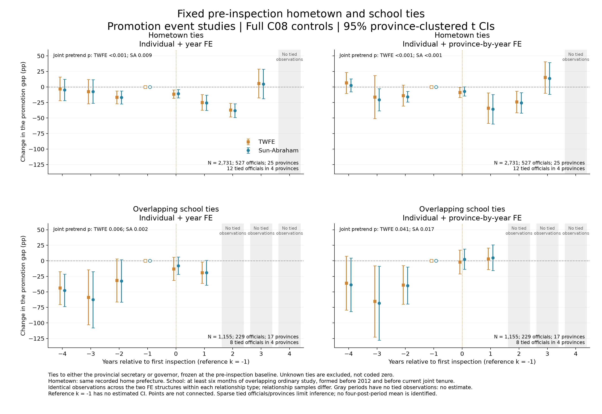
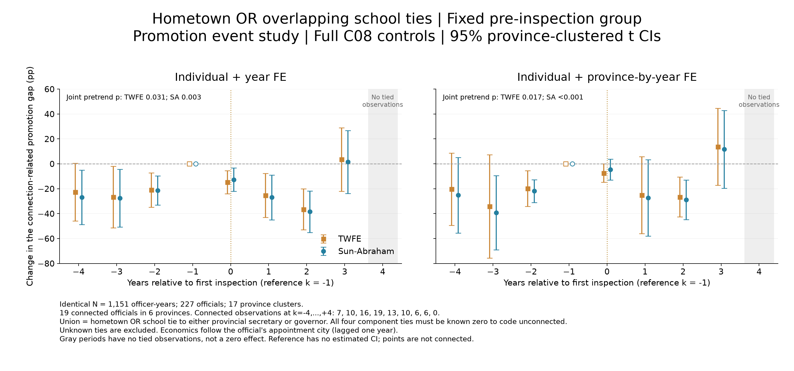

2026-10-21 发布状态：当前估计快照，尚未完成晋升职级标签修订。 广义晋升包含记录职级上升的人大／政协去向，不是所有去向都属于省级机构。主样本44条最早事件为人大／政协的正例由原数据职级上升触发；青岛市政协属于市级去向。丁大卫的无锡市人大副主任记录标“副部”，职务与级别一致性待核验；另有副省长标志与类别冲突、second_line年度聚合问题。数值复现成功不等于这些原始标签已被外部确认。下列系数保留原版本，没有悄悄修改晋升定义。
公开仓库只含代码与汇总结果；逐人输入和关系证据见本地完整包。被省略的数据下载链接已明确标识。
主结果与腐败官员检查 结果整理：主结果与腐败相关领导更替检查 版本说明： 方法审查报告 核验的是旧共同422人版本；本页1.4及2.4已按用户要求改为每期限独立样本。旧报告中的样本数字属于历史版本；队列选择、删失与晋升分类的提醒仍适用。
本文件汇总已有核验结果；本轮没有新增回归或挑选显著窗口。首次巡视按各省实际进驻日期对齐，不是所有省统一以2012年为断点。以下结果是关系组与非关系组晋升差异的变化，不是全体官员的巡视平均效应。
事前关系优势与模型 A：个人＋年份 B：个人＋省份×年份 腐败官员检查 1．主结果
1.1 样本、变量与关系
• 主年度结果：2,807个官员年、547人、26省；固定事前关系组中63人。展示k=-4至+4，k=-1为参照。
• CPED重建晋升：行政级别上升，市长升市委书记，或新任副省长（包括已为副部级的市委书记转任副省长）。不把普通委员身份或同级平调自动算晋升。
• C0：与基期省委书记或省长任一人的事前至少六个月共事关系；形成于2012年前、早于双方当前共同任职。个人边保留；本轮不混入同乡和校友。
• 原年度滞后口径形成的关系快照较早：2013巡视省为2011年底，2014巡视省为2012年底，不是进驻前一刻。此次结果整理保留原口径，没有悄悄改变基期。
• C08沿用全部个人控制与经济控制：年龄特征、任期及平方、职级、现职身份，以及官员当年基期任职城市的上年GDP增长、对数人均GDP、对数人口。经济变量跟官员任职地走。个人加时间FE吸收线性年龄项。
1.2 巡视前：关系是否对应更高晋升概率？
只使用相对时间k=-4至-1，沿用主事件研究来源样本和固定关系C0 。共1,562个官员年、542人，其中62人为关系组，26省。以下三个控制版本使用完全相同的观测。
事前水平回归
δ是同一省份、同一年内，事前有关系与无关系官员的条件晋升概率差异。此处不加个人FE，因为固定C0 会被个人FE完全吸收。依次展示仅省份×年份FE、加个人控制、再加官员任职城市经济控制；标准误按基期省份聚类。

结果： 原始年晋升率为17.06%（有关系，29/170）和14.44%（无关系，201/1392）。仅省份×年份FE的条件差异为+1.22个百分点（p=0.614）；加个人控制为+7.75（p=0.031）；完整控制为+7.98个百分点，95% CI [0.89, 15.07]，p=0.029 。这是事前条件关联，并非关系的因果效应，也不是每个事前年份都显著。
事前加入城市FE、个人FE的完整敏感性结果
加入城市FE时，三个水平模型使用共同样本：1,456个官员年、441人、25省。省份×年份FE下为+7.11个百分点，95% CI [-0.25, 14.46]；城市＋年份FE为+0.98，CI [-13.44, 15.40]；城市＋省份×年份FE为+2.49，CI [-11.64, 16.61]。城市FE版本较不精确，不能只展示显著的原样本版本。

个人FE版本估计ηk ：早期关系差距相对于k=-1的变化，不能再解释为绝对关系优势。上式F分别取年份、省份×年份、城市＋年份、城市＋省份×年份；年份FE版本另含未被吸收的事件时间主效应。

事前名单由较晚的巡视前快照固定，早期晋升可能影响进入名单，存在回溯入样选择。该部分与后面的个人FE事件研究估计对象和样本不同，不能把+7.98与事件系数直接相加推算巡视后的绝对优势，也不能用“不显著”宣布无差异。
1.3 年度event study：两组固定效应明确分开
定义Dpt k =1(t-Gp =k)，Gp 为基期任职省的首次巡视年。两组都保留个人FE ，固定C0 ，使用完全相同的2,807个官员年、547人、26省及C08控制；展示k=-4至+4，k=-1为参照。因变量为100×年度晋升指标。
βk 的含义： 关系组与非关系组的晋升差距，较巡视前一年改变了多少个百分点；负数表示差距相对下降。它不是当期绝对关系优势，也不是全体官员的巡视效应。
A组：标准two-way fixed effects——个人＋年份FE
αi 吸收官员不随时间变化的特征；λt 吸收全国同年共同冲击。巡视相对时间主效应Dk 另行进入回归。该规格允许利用更广的跨省时间比较，尚未吸收各省各年独有的晋升共同冲击。

估计方法 +1至+4平均变化（百分点） 95% CI 原始p值 TWFE -8.77 [-25.46, 7.91] 0.289 Sun–Abraham -7.73 [-26.96, 11.49] 0.415
B组：加强时间冲击控制——个人＋省份×年份FE
λpt 允许每省每年都有自己的共同晋升环境。它已经包含年份FE；因此不是再估计一套独立年份效应。各事件时间主效应也被吸收。比较依赖同省同年关系组与非关系组的差异及其随时间的变化，同时净化个人固定差异。

估计方法 +1至+4平均变化（百分点） 95% CI 原始p值 TWFE -8.64 [-25.01, 7.74] 0.288 Sun–Abraham -6.69 [-24.96, 11.59] 0.458
两组解读： 没有加入城市FE的这两组，事后+1至+4平均变化均为负，但95%区间跨零。不能称为四期稳定显著。+4期只有4名事前有关系官员，长期支持有限；图中-1期为空心归一化参照，没有估计的置信区间。平均区间使用完整系数协方差计算，并非四条逐点CI求平均。
Sun–Abraham对应模型与识别含义
F取A组或B组的固定效应，未被吸收的事件时间主效应同时纳入。先估计巡视批次g与事件时间k的关系组交互系数，再按相应权重聚合。C0 =0官员在该关系差异设计中充当对照，但其所在省也接受巡视；因此结果是巡视前后关系差距的变化，仍需相应的条件差异趋势假设。
补充：城市FE敏感性（与上面两组主图分开）
以下旧图保留四种FE用于透明对照：个人＋年份，个人＋省份×年份，个人＋城市＋年份，个人＋城市＋省份×年份。城市FE是加法效应，不是城市×年份FE。城市＋年份版本的显著平均下降，在加入省份×年份共同冲击后减弱，说明结果依赖FE结构。

这两组图的系数、区间均直接来自已核验CSV。本次更新只整理模型和图，没有重新估计、挑选窗口或改变显著性阈值。
1.4 累计晋升：12／24／36个月各用自己的前后完整样本 新版： 每个H只要求该H前后结果均可确定，不再要求六个窗口全部完整。12个月497人（57有关系）、24个月466人（52有关系）、36个月425人（46有关系），均25省；每H每人两行。完整模型、样本流程与同步排省结果 。
100 Yis (H) = αi + λp,s + θH C0i Posts + (Xi0 ×Posts )′γH + εis
Y表示窗口内至少晋升一次，不是第H个月末是否有任职记录。正向事件可确认1；无正向事件须有充分履历覆盖才能确认0；其他记未知。个人FE吸收固定C0，省份×前后期FE吸收Post；这不是逐年省份×年份FE。
期限（月）
人数
关系组人数
θ（百分点）
95%下限
95%上限
常规p
wild p
wild Holm(3H)
12
497
57
-11.5481
-23.9466
0.8505
0.0665
0.0850
0.1700
24
466
52
-32.6161
-52.5330
-12.6993
0.0025
0.0102
0.0306
36
425
46
-16.1372
-42.0040
9.7297
0.2102
0.2389
0.2389
灰色旧共同422人结果仅作对照；新版各期限样本不同，不将系数跨H变化全部解释为同一批人的动态效应。24／36个月事前窗仍涉及较晚选人的回溯选择，晋升定义与信息性删失问题仍保留。原始p值与三期限Holm校正都报告，不判定“关系优势消失”。
2．腐败相关领导更替的检查
2.1 要排查的解释
原支持者因查处退出，可能导致其旧部晋升表现下降，而不必意味着支持者仍在时关系回报降低。省份×年份FE可以吸收共同省级冲击，但不能吸收只影响该领导旧部的额外损失。若查处由巡视引起，更替也可能是巡视机制而非普通遗漏因素。
2.2 原联系对象是否仍在：旧共同样本的描述性核查 口径说明： 本小节45名关系官员及下一小节的描述统计保留自旧共同422人版本，不是新版每个期限各自的关系组人数。用于解释退出机制的局限，不能直接当作新版样本的比例。
累计样本45名事前有关系者中，至少一名原联系对象仍任本省书记/省长的人数：巡视进驻时35，12个月末26，24个月末16，36个月末7。原联系对象均不再任这两个职位的人数相应为10、19、29、38。
这按市级官员计数，不是省级领导离任率；且原关系快照较早，有10人在巡视开始时原联系对象已离任。不能由此直接认定因反腐失去支持。
2.3 对称前后窗的总体更替与网络构成：只作描述
窗口 巡视前离任比例 巡视后离任比例 前期离任领导平均联系人数 后期离任领导平均联系人数
12个月 13.3%（8/60） 13.3%（8/60） 1.00（8位领导） 2.14（7位领导） 24个月 46.3%（25/54） 29.6%（16/54） 1.86（22位领导） 2.00（16位领导） 36个月 63.5%（33/52） 63.5%（33/52） 1.69（29位领导） 1.52（29位领导）
总体更替未显示巡视后普遍加快；离任者网络规模的差异方向随期限变化。离任包含正常调任与查处等所有原因，不能称为“正常离任率相同”。左右统计的省份范围不同：网络部分没有直辖市的可比地级市主官关系池；但各H内前后使用匹配省份框架。关系未知不补0。
修正先前表达：这些是固定样本的描述统计。本轮不展示其bootstrap区间，不用此前人为重抽样的区间断言“差异不显著”或“前后等效”。描述性模式不能排除特定旧部群体更容易失去支持者。

2.4 整省排除后重跑：累计部分已同步使用各期限独立样本 Strict排除河北、福建及原本不在主样本中的沪津渝；Plus_discipline再排四川；Plus_recent再排辽宁、甘肃。保留原关系、结果、日期、控制和FE。年度event study没有改样本，本次只将累计排省检查同步至新版每期限面板。
新版24个月主规格：
variant
b
lo
hi
p_wild
p_wild_holm_3H
Original
-32.6161
-52.5330
-12.6993
0.0102
0.0306
Strict
-33.2278
-53.7184
-12.7371
0.0127
0.0381
Plus_discipline
-32.8393
-54.1493
-11.5292
0.0167
0.0501
Plus_recent
-34.7252
-54.7771
-14.6733
0.0066
0.0198
各期限删样人数和有关系者人数见完整样本流程。整省排除仍不能替代逐一核验原支持者退出；按事后查处选省也改变比较总体。
未改动的年度城市＋年份FE结果
estimator
Sun_Abraham
TWFE_fixed
variant
Original
-18.659
-19.099
Strict
-18.837
-19.580
Plus_discipline
-18.599
-19.312
Plus_recent
-19.105
-20.712

2.5 当前可用表述 “累计晋升分析对每个期限分别使用其前后结果完整的官员样本，并将旧共同样本作为对照；条件关联、各期限样本构成与腐败相关排省结果分别报告。年度event study仍对FE敏感，较晚选人、信息性删失和晋升类型混合尚未解决，因此不能宣布巡视已因果性地消除关系作用。”
补充：同乡与同期校友的事件研究 沿用固定巡视前分组、C08控制及两组FE。关系组很小，缺乏支持的后期留空。两类关系在两组FE与两种方法下的事前联合检验均p<0.05，不能把事后系数解读为通过平行趋势的因果效应。 查看模型、各期样本支持及全部结果 。

补充：同乡或同期校友，合并关系 任一关系成立即记1，未知不补0。查看模型、样本支持与全部结果 。
四个模型的事前联合检验均p<0.05；不满足常规的事前平行差异趋势检验，不能将事后负系数解释成已识别的巡视因果效应。

文件与核验
正文加入事前证据、明确区分两组事件研究及模型方程，后接累计晋升和腐败更替检查；图均为英文。本次直接更新原HTML页面。汇总Excel保留原始系数、95%区间、常规/wild/校正p及排除证据。有关显著性的描述来自原回归推断；离任率/人数仅作描述统计。既有23项排省重估核验全部通过，原结果可精确复现、累计点由一阶差分复核；本轮没有重跑或覆盖它们。
排除分类的官方来源 上海 陈良宇：官方证据 ；Removed as Shanghai secretary with investigation; pre-2012 case 重庆 薄熙来：官方证据 ；March 2012 departure followed by April case; same removal episode 重庆 孙政才：官方证据 ；Official decision states July 14 removal for discipline examination; formal case July24 河北 周本顺：官方证据 ；Serving provincial secretary when investigation announced 福建 苏树林：官方证据 ；Serving governor when investigation announced 天津 黄兴国：官方证据 ；Serving mayor and acting party secretary 四川 魏宏：官方证据 ；Disciplinary removal/demotion; not coded as a bribery conviction 辽宁 王珉：官方证据 ；Left Liaoning May2015; investigated March2016 in NPC office; not proven causal departure 甘肃 王三运：官方证据 ；Left Gansu March2017; investigated July2017; not asserted contemporaneous removal 下载新版累计结果Excel ；旧共同样本汇总Excel（历史版本）
本次页面更新：2026-10-21。事前原样本与城市FE共同样本分别报告；年度两组主图使用相同观测。下载两组事件研究系数 ；页面更新代码 。原页面备份保存在code/中。